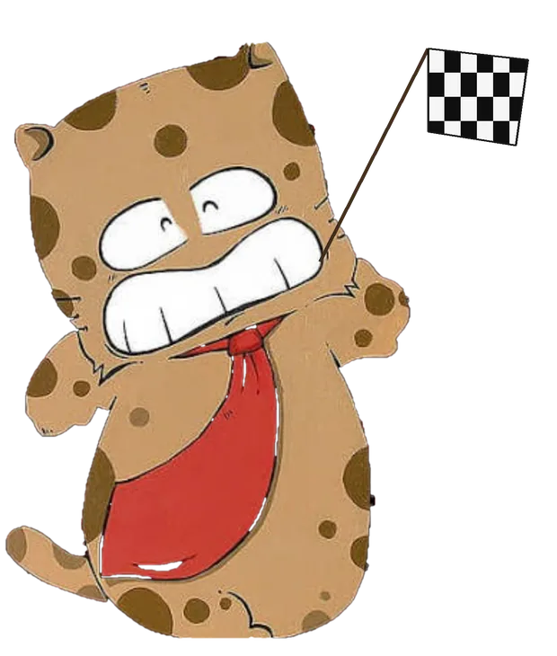

Analisi delle restrizioni conosciute lungo la rotta.
Schermo: auto
--
STRADA ATTUALE
--
KM RESIDUI
--
--:--
TEMPO RESIDUO
--:--
--:--
ORA D'ARRIVO
--:--
NAVIGAZIONE HGV
Caricamento del percorso camion con altezza, larghezza, lunghezza, peso e carico per asse.
Prossima uscita
↗
--
--
MODALITÀ OFFLINE — percorso salvato
ETA adattivo --:--
Guida
Voce navigatore
Le voci disponibili dipendono dal motore TTS installato sul dispositivo.
Lo stile cambia davvero fraseggio e prosodia; gli avvisi di sicurezza restano sempre chiari.
Pausa
Traffico TomTom
Incidenti/chiusure dalla TomTom Routing API e Traffic Flow Orbis. La key viene salvata solo su questo dispositivo.
Traffico non configurato.
GPS / strada--
Limite HGV--
Autovelox--
--
Servizi camion--
--
Database sicurezza--
Cache persistente locale
Aggiornamento manuale 9 Paesi · diagnostica Paese per Paese
Traffico TomTom--
--
Informazioni
--
GPS: attesa
Rete: --
Routing: --
Aggancio strada: --
GPS accuracy--
Velocità--
Heading--
Snap distance--
Route index--
Follow--
Off-route count--
Traccia reale attiva
PANORAMICA PERCORSO
Partenza · posizione · tappe · destinazione
🟢 Partenza🔵 Posizione🟠 Tappe🔴 Destinazione

ARRIVATEN A DESTINAZIONEN !!!!
Tocca l'immagine per chiudere
TAPPEN RAGGIUNTEN!!!
Ripartenza automatica tra 20 secondi
SERVIZI E POSIZIONI
Ricerca libera Geoapify: non è limitata al percorso corrente.
⛽ FILTRI CARBURANTE
CARTE ACCETTATE (selezione facoltativa)
Esclude accessi HGV esplicitamente vietati. Con una carta selezionata usa il database dedicato della rete. Per IP CARD, se il database dedicato non è installato, accetta soltanto punti con metadati di pagamento IP CARD espliciti: mai deduzioni dal solo nome o marchio.
Scrivi cosa vuoi cercare.
ANTEPRIMA POI
--
--
\n
Area di servizio
📍 P DOVE-COME
POSIZIONE ATTUALE
Ricerca indirizzo…
STRADA
—
LOCALITÀ
—
PROVINCIA / REGIONE
—
NAZIONE
—
SUL PERCORSO
—
ALLA DESTINAZIONE
—
TRA QUANTO? · INSERISCI 4 CIFRE
Digita solo 4 cifre (HHMM). I due punti vengono inseriti automaticamente.
Il punto “dove sarai” resta fisso. Cerco aree di servizio e parcheggi camion negli ultimi 20/30/40 km prima; con ECCEDI posso proporre anche una sosta entro altri 15 minuti.
STRADA
—
LOCALITÀ
—
PROVINCIA / REGIONE
—
NAZIONE
—
DISTANZA PREVISTA
—
RESTANTE
—
COORDINATE
—
TEMPO INSERITO
—
🚛 DOVE FERMARTI
🛣️
Area di servizio
🔵 POSIZIONE ATTUALE🟣 PUNTO TEORICO🟠 AREA SERVIZIO🔷 PARCHEGGIO CAMION🔴 DESTINAZIONE